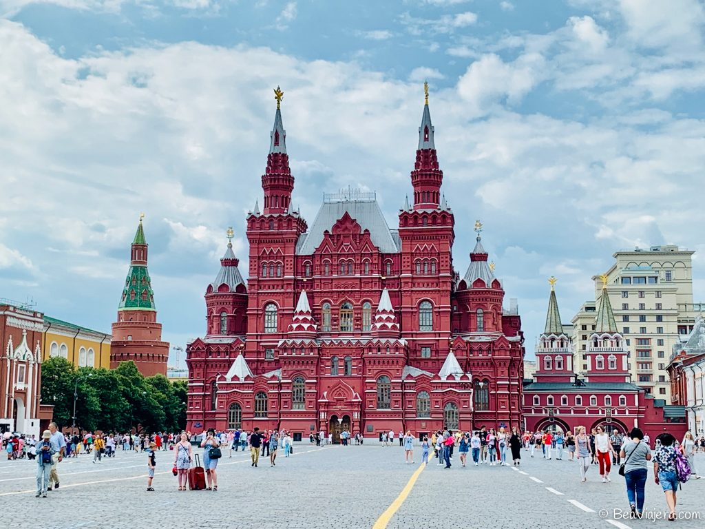
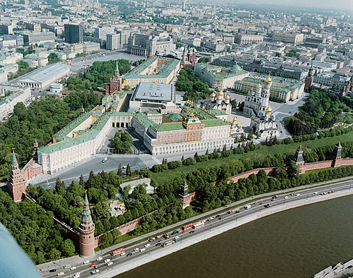

Galería de Imágenes
Lugares de Interés

Plaza Roja
Corazón de Moscú y testigo de grandes eventos históricos. Es Patrimonio de la Humanidad por la UNESCO. La plaza es el punto de referencia desde el cual se miden todas las distancias de las carreteras en Rusia.

Kremlin
Fortaleza histórica y residencia del presidente. Sus museos y catedrales atraen millones de turistas cada año. El Kremlin alberga el famoso Palacio del Senado y la Cúpula Dorada de la Catedral de la Asunción.

Teatro Bolshói
Uno de los teatros más prestigiosos del mundo, hogar del ballet y la ópera rusa. Su arquitectura neoclásica y su imponente auditorio lo convierten en un destino imperdible para los amantes del arte.

Museo Estatal de Historia
Ubicado en la Plaza Roja, este museo alberga una vasta colección de objetos históricos desde la prehistoria hasta la Rusia moderna.